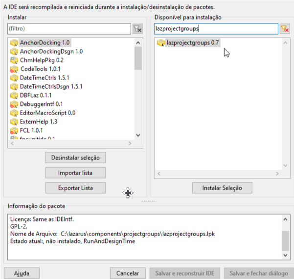

Por padrão o Lazarus-IDE abre apenas um projeto por vez, e isso nem sempre é bacana. Em alguns ambientes é conveniente ter todos os projetos num grupo e editar/compilar o que for mais conveniente. Se tem a necessidade de manter múltiplos projetos abertos simultaneamente então vá em Package|Open Package(.lpk) e instale o pacote “lazprojectgroups”:

Depois de adicionar o pacote vá em “Salvar e reconstruir IDE”, após reiniciar o Lazarus notará este componente no menu Projeto->Criar/Abrir grupo de projetos. Você pode docá-lo num painel lateral caso queira deixá-lo fixo.
ALERTA: O GERENCIADOR DE PROJETOS está num estágio bem básico no Lazarus 2.0, mas há avanços importantes na versão 2.2.